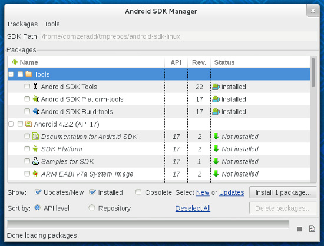

Probably you already know about Geeksphone's Firefox OS Developer Phones. A couple of days ago I received mine (the Keon version) as a Mozilla Rep for testing and showcasing Firefox OS on upcoming events.
Keon comes with an old Firefox OS build, which means that it misses many cool features already landed on the current release branch (for instance most of the contacts import options), but also makes bug reporting difficult since you have to determine if a bug you’ve found has already been resolved before reporting it.
So with a little help from (Flash)Fredy here are some quick steps to get your Keon device updated :-)
Flash a new Firefox OS build
At Geeksphone forum you’ll find a relevant thread with unofficial recent builds and detailed guidelines on how to flash it on your device. Nothing else to add here, besides the fact that flashing a build comes with a certain amount of risk :-)
Update Gaia
If you are feeling less adventurous you could just update Firefox OS UI (Gaia). The steps are really easy. Plug your device and run:
git clone https://github.com/mozilla-b2g/gaia.git
git checkout v1-train
make reset-gaia
This will restart your device and when it comes back you’ll have the new Gaia.
The tools you need
In order for all the above steps to work you need adb, which stands for Android Debug Bridge and it’s a simple command line tool that helps you communicate with a connected Androd/Linux phone device.
Here are the steps needed to have adb working (at least on Fedora). First download the SDK tools from Android. Let’s assume that you uncompressed the archive on ~/android-sdk/.
cd ~/android-sdk/tools
./android
Then you check to install the “Tools”, that would probably have a “Not Installed” status on your system. This will download and install everything you need under ~/android-sdk/platform-tools.

If you want to use adb from everywhere you have to add it on your system’s PATH. In this case:
export PATH=$PATH:~/android-sdk/platform-tools
You can add this to your ~/.bash_profile for permanent effect.
One last step is to add a udev rule for the specific device. Running lsusb on a terminal gives you the vendor identifier. For Keon this is “05c6″. So you have to add the line below at /etc/udev/rules.d/51-android.rules
SUBSYSTEM=="usb", ATTR{idVendor}=="05c6", MODE="0666", GROUP="plugdev"
and tell udev to re-read the rules:
sudo udevadm control --reload-rules
If you did everything correctly then plug your Keon device and run:
adb devices
You should see a line for keon.
Hack
If you are developing an Open Web App then you could just use Firefox OS Simulator to push it on the Keon device. See how simple that is. The only thing you’ll need for this to work is the udev rule above. You won’t need adb, since the simulator comes with it’s own copy.
If you want to hack around Gaia and the core apps, then just fork the code, do all the changes you want and use your repo to flash Gaia on the phone as described above.
Happy Hacking :-)
Important: Don’t ever choose to reset your phone to Factory defaults. It seems that currently you get stuck if you do it and the only way to undo it is by flashing a new build (I speak from experience :P).
 diaspora*
diaspora*